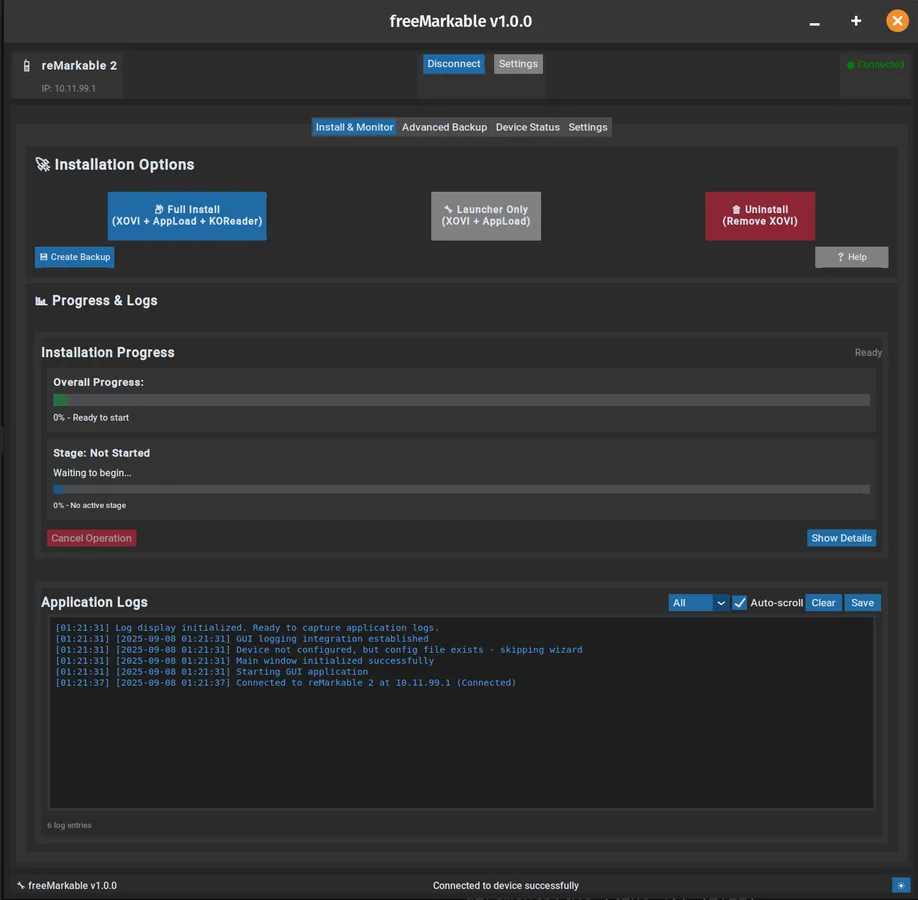

LEAD → COMPLETE PROJECT
freeMarkable: install XOVI and a third-party app entry on reMarkable
USER OUTCOME
Use a desktop Python GUI plus the reMarkable SSH/USB-network connection to install XOVI and AppLoad, with optional KOReader integration. This changes the device software stack; it is not a normal document-sync app.

Project overview
Add a third-party application framework and launcher entry to reMarkable devices listed upstream.
Public sources reviewed
- 4/5 dimensions have verifiable sources
- Only dimensions backed by verifiable sources are included; unevidenced dimensions remain null rather than receiving a neutral placeholder.
Applicable devices
- The upstream README lists reMarkable 1 (armv6l), reMarkable 2 (armv7l/armhf), and reMarkable Paper Pro (aarch64/arm64).
- That scope is an upstream author claim; KitAgain has not independently installed or verified the toolkit on those devices.
- reMarkable and Kindle are different platforms. The linked e-ink guide is adjacent decision context, not interchangeable installation guidance.
A good fit if
- You own an upstream-listed reMarkable and are prepared to maintain SSH, Python, and a third-party app framework.
- You need XOVI/AppLoad or KOReader access and can manage system changes and recovery checks.
Skip this route if
- You only need document sync, cannot enable SSH, or cannot retain and verify a backup.
- You require unchanged vendor support, zero maintenance, or compatibility independently proven by KitAgain.
Before you start
- The computer needs Python 3.10 or later, internet access, and a Windows/Linux environment that can run the project launchers; the README also claims cross-platform support.
- The device needs SSH plus USB or Wi-Fi connectivity. Upstream explicitly recommends USB and does not recommend Wi-Fi for installation.
- Confirm adequate charge, the detected architecture, and a readable installer-created backup before modification.
STOP CONDITIONS
- Stop when the model or CPU architecture differs from the upstream table, SSH is unavailable, or a stable USB-network connection cannot be established.
- Stop when the installer did not create a readable backup, the restore location is unclear, or system modification is unacceptable.
- Do not turn upstream phrases such as all-device support or reliable installation into a KitAgain compatibility or success guarantee.
Risk and recovery
Key risks
- The route installs XOVI, AppLoad, optional KOReader, and system services, changing the device software environment.
- Upstream claims automatic backup, restore, and uninstall features; this page has not independently verified those recovery steps.
- Firmware updates, architecture changes, Xochitl/USB connection faults, and third-party component updates can change behavior.
Recovery boundary
- Before starting, retain the installer backup, record the device software version and connection method, and confirm the backup is accessible.
- If the main application or USB connection fails after installation, use the documented upstream connection troubleshooting first. Do not stack more changes while recovery is unclear.
Continue through the topic hub
Evidence, maintenance, and sources
- Hands-on status KitAgain has not tested this route hands-on.
- Repository archived No
- Last push 2026-01-22T01:37:17Z
- Upstream author claims are not an independent KitAgain reproduction; unevidenced compatibility, performance, cost, and long-term stability remain unknown.
Source ledger
- freeMarkable upstream README ↗upstream-readmeUsed to check supported devices, Python/SSH/connectivity prerequisites, the XOVI/AppLoad route, and upstream backup claims.https://github.com/wowitsjack/freeMarkable/blob/master/README.md
- freeMarkable releases ↗upstream-releasesThe upstream package entry; release notes and author support statements are not an independent KitAgain reproduction.https://github.com/wowitsjack/freeMarkable/releases